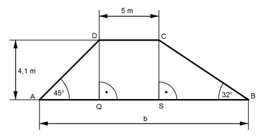

Aufgabe 67 Welche Breite b hat der Deich? Wie groß ist seine Fläche A? Welches Volumen V hat ein Deich von 100 m Länge?

Im Dreieck AQD: 4,1 m tan 45° = ---------- |*AQ AQ AQ * tan 45° = 4,1 m |:tan 45° 4,1 m 4,1 m AQ = --------- = --------- = 4,1 m tan 45° 1 Im Dreieck SBC: 4,1 m tan 32° = --------- |*SB SB SB * tan 32° = 4,1 m |:tan 32° 4,1 m 4,1 m SB = --------- = --------- = 6,6 m tan 32° 0,6249 b = AQ + 5 m + SB = 4,1 m + 5 m + 6,6 m = 15,7 m Trapezfläche : 5 m + 15,7 m A = --------------- * 4,1 m = 42,4 m2 2 V = A * Länge = 42,4 m2 * 100 m = 4 240 m3 Im Dreieck MAE (rechter Winkel bei M): r cos α = --- |*s s s * cos α = r |:cos α r 7,4 cm s = ------- = ---------- = 28,6 cm cos α 0,2588 γ = 2 * (90° - α) = 2 * (90° - 75°) = 30°